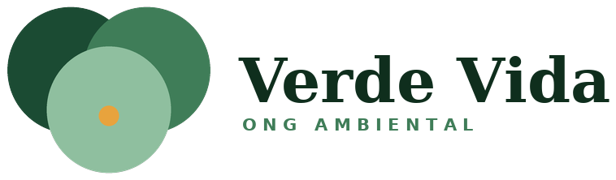

Fundada em 2020, a ONG Verde Vida nasceu da vontade de um pequeno grupo de moradores de transformar a relação da comunidade com o meio ambiente.
Desde então, já realizamos dezenas de projetos de plantio, educação ambiental e mobilização social, sempre com o apoio de voluntários dedicados.
Promover a preservação ambiental por meio da educação, do engajamento comunitário e de ações práticas e sustentáveis.
Preservamos o meio ambiente pensando nas próximas gerações.
Agimos com responsabilidade, ética e clareza.
Acreditamos que juntos podemos transformar nossa comunidade.
Utilizamos o conhecimento para promover mudanças positivas.
Início da nossa jornada pela preservação ambiental.
Realização do primeiro grande mutirão de plantio.
Ampliação das ações de educação ambiental.
Um marco importante para a Verde Vida.
Saiba mais sobre preservação ambiental no site do Ministério do Meio Ambiente .
© 2026 ONG Verde Vida. Todos os direitos reservados.
Projeto acadêmico desenvolvido por Gilvam J. T. de Oliveira.